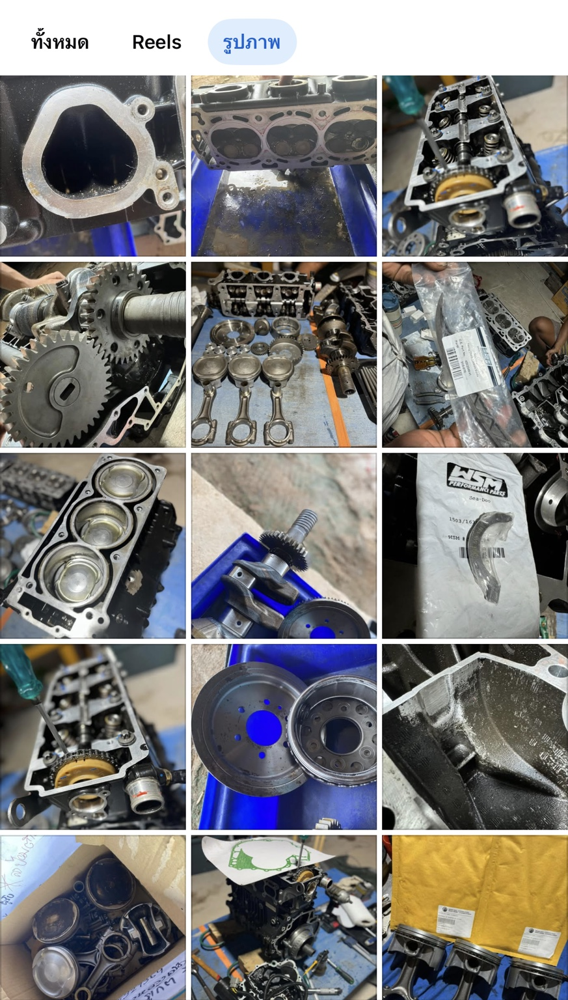

⚙️
Engine Repair
รื้อเครื่อง ตรวจลูกสูบ วาล์ว เพลาข้อเหวี่ยง และชิ้นส่วนภายใน
JSK 51 PHUKET
รับซ่อมและดูแลเจ็ตสกี SEA-DOO & YAMAHA ตั้งแต่งานเครื่อง ระบบไฟ ปั๊มเจ็ต จนถึงโอเวอร์ฮอลและเซอร์วิสครบวงจร

OUR SERVICES
เน้นตรวจอาการให้ตรงจุด พร้อมอธิบายงานและอะไหล่ก่อนดำเนินการ
รื้อเครื่อง ตรวจลูกสูบ วาล์ว เพลาข้อเหวี่ยง และชิ้นส่วนภายใน
โอเวอร์ฮอลเครื่อง เปลี่ยนอะไหล่สึกหรอ ประกอบใหม่และทดสอบ
ตรวจระบบไฟ สตาร์ต เซนเซอร์ สายไฟ และอาการไฟเตือน
ตรวจปั๊มเจ็ต ใบพัด ลูกปืน ซีล และระบบขับเคลื่อน
เช็กระยะ เปลี่ยนของเหลว หัวเทียน และดูแลก่อน-หลังใช้งาน
มีบริการรับ-ส่งเรือภายในภูเก็ต นัดหมายล่วงหน้าได้
ENGINE OVERHAUL PROCESS
ตั้งแต่เปิดเครื่องจนถึงประกอบกลับและทดสอบ ทุกขั้นตอนเน้นความละเอียดและตรวจเช็กชิ้นส่วนก่อนเปลี่ยน

REAL REPAIR WORK
ภาพงานเครื่องและชิ้นส่วนจริง ช่วยให้ลูกค้าเห็นรายละเอียดก่อนตัดสินใจซ่อม

งานเครื่องไม่ได้จบแค่เปลี่ยนอะไหล่ เราตรวจผิวชิ้นงาน ระยะ ชุดเฟือง วาล์ว ลูกสูบ และจุดสึกหรอทุกส่วนที่เกี่ยวข้อง
NEED A REPAIR?
ช่วยคัดอาการเบื้องต้นและนัดคิวเข้าตรวจที่เวิร์กช็อป
CONTACT JSK 51
JSK 51 Phuket · Jetski Repair Shop